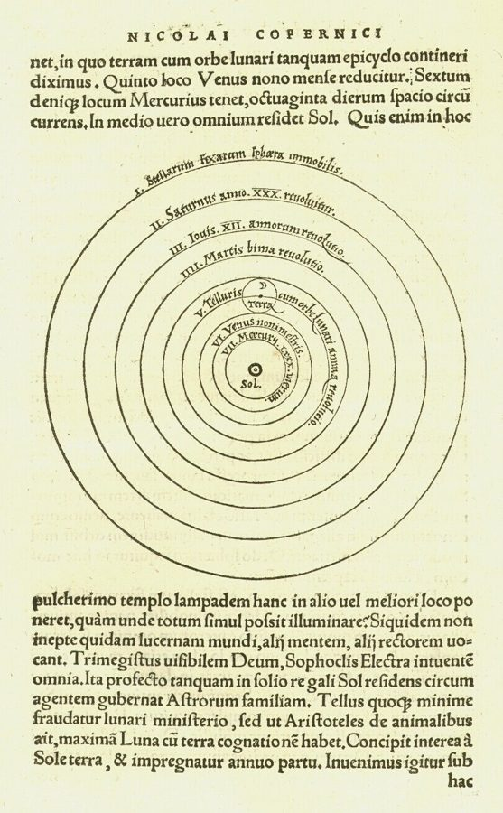

very roughly speaking
… for subsequent guesses. Very roughly speaking …
非常粗略地说
作者自己给类比打了折扣：猜数字和演化只是大致相像。
前两章讲科学怎样靠实验认识因果。这一章换个方向问：没有人懂其中的道理，一个系统能不能也越变越好？作者拿两件事作比：一个猜数字游戏，和用遗传算法去调一座有 100 个开关的化工厂。他想借此分清两种知识：写得出来、能拿去检验的明确知识，和演化、常识、传统里那种说不出道理却管用的隐性知识；最后把科学本身也放进这场竞争里看。读的时候抓两条线：演化凭什么比瞎猜快，科学和这种演化差在哪里。
第 2 章最后一段留了个问题：科学不再追求绝对真理，那它的「进步」以什么为参照？这一章第 53 段回来作答。导言第 14 段预告过，要细讲基因演化怎样不靠意识就积累起「管用的东西」，讲的就是这一章。这里立起的「隐性知识」，第 13 章讲「自由当手段」、第 14 章讲演化经济学时都要用，第 13 章第 3 段还会回到这座化工厂。
§1 第 24 段说交叉才是搜索的主力，这话作者是对演化本身说的，没加限定。它只对了一半：有性生殖时每代的新组合多半来自重组，但真正新的变异最终来自突变。
没有人懂其中道理的试错，凭什么能越试越准？科学又和它差在哪？
读的时候带着这几个问题。不用先找答案，读完回来对照「检查一下理解」。
§1 从一个猜数字游戏起步，先立一个对比：同样是试错，有没有反馈差得很远。接着很长一段像算法教程，一步步讲遗传算法怎么调化工厂，读着像离题，其实是在给后面每一个比方备料。第 25–27 段是转身处，作者从算法里拎出两条对社会制度的启示，这是 §1 唯一直接说到社会的地方。§2 把「方法」本身放进比赛：不同参数的算法、拿着笔记本计算的工程师，一层套一层地比，作者顺手定义了一个词。§3 突然跳回科学哲学，接上第 2 章的范式：先说科学像什么，再画一棵知识树，拿哥白尼说明理论之间怎么裁决，然后再往上一层，把整个科学放进和常识、传统的竞争里。最后几段用手机定位落地，回答第 2 章结尾的问题。
作者落在哪：演化不是瞎试，它能在没人懂的情况下积累隐性知识，所以好的制度要鼓励点子交叉混搭；科学是有意识的另一套办法，也只是和常识、传统竞争的一方，在某些问题上更快更可靠，凭的是让我们更能掌控物质世界，而不是证明了自己符合「实在」。
这一页是原书第 3 章的三节，粗体是本站给的节名，下面是原书这一节第一段开头的几个词，在 Kindle 里搜它就能跳过去（原书的小标题也在目录里）。每节标了档：「先读」不读就跟不上全书主线，「有空」好看但跳过不丢线。读完打个勾。
先把这一页用到、作者默认你懂的几个概念讲一遍。讲的是概念本身，作者拿它推出什么，读原书时自己看。前面讲过的归纳问题、隐藏条件、证伪、范式，还有导言的结构化和非结构化试错，点进去看。
明确知识是说得出来、写得下来、能拿去检验的知识：一条物理定律、一份操作规程、一个可以被实验推翻的理论。隐性知识是「这么做管用」的倾向，却没人说得出为什么：一个物种的基因里存着适应环境的大量「经验」，一个社会的常识、习俗、老规矩里也有。这是作者的用法，比通行的说法宽。哲学家 Michael Polanyi 说的默会知识（tacit knowledge）指的是人身上说不出的本事，比如会骑自行车却讲不清怎么保持平衡；作者的隐性知识连基因、连没人意识到的社会惯例都算进去。程序员的类比：老系统里有一段谁也看不懂的代码，删了就出事，它「知道」一个没人记得的边界情况，这是隐性知识；查清楚、写进文档、配上测试，才变成明确知识。
在这一页：第 4 段说二分法在形成「隐性理论」，第 5、7 段说演化也是；第 30–31 段让两种知识比赛；第 45 段把常识、传统都算作隐性知识。
借自然选择的思路找好答案的计算机方法，1970 年代由 John Holland 系统化。先随机造一批候选答案，每个写成一串 0 和 1，叫基因组（genome）；拿每一个去试，量出成绩，叫适应度（fitness）；淘汰差的，剩下的两两配对生后代：有的原样复制，有的交叉（crossover），在随机一处切开、互换后半段；最后以极低的概率随机翻转几位，叫突变（mutation）。一代代循环下去。它不需要懂问题的道理，只要能给每个候选打分。适合可能性多到试不完的问题：100 个开关就有 2100 种组合，约 1.3×1030，第 8 段那个「2100」就是它，有的阅读器会把上标显示成普通数字。它不保证找到最好的那个，只是通常比乱试快得多。
在这一页：第 7–24 段整段讲它；第 24 段说交叉是主力，作者把这话也说给生物演化。第 13 章第 3 段会回到这座化工厂。
一种把知识的增长看成演化的哲学主张：不管是生物适应环境、人想出新点子，还是科学换理论，都是先冒出各种尝试，再把经得起考验的留下。美国社会科学家 Donald T. Campbell 是主要的提出者：1960 年的论文用「盲目变异加选择性保留」概括这个过程，1974 年在一本讨论 Popper 的文集里用了「演化认识论」这个名字。Campbell 还强调选择是一层套一层的：底层的一种做法好不好，要看它让上一层的群体更能胜出没有。作者第 33 段定义的「替代适应性」（vicarious adaptiveness，作者的用法），说的就是这种多层竞争里一个工厂的办法对它所在的组有多大帮助。注意：这一章第 1 段只说演化「常被说成」随机变异加保留，第 5、25 段用了「盲目变异加选择性保留」的说法，都没点名 Campbell；导言第 15 段才提到他的演化认识论。
在这一页：第 25、27 段作者要修正的，就是「盲目变异加保留」这个说法；第 33–36 段的多层竞争，第 35 段点明出自 Campbell。
科学哲学里的一种立场：科学理论不必是对世界的真实描述，它只是做预测的工具，好用就行；电子、夸克是不是「真有」，可以不问。对面是科学实在论（scientific realism）：成功的理论大致说中了世界本来的样子，不然它凭什么预测得这么准。一个有名的例子是 1543 年哥白尼《天体运行论》出版时，神学家 Andreas Osiander 匿名加的序言：书里的假设不必是真的，只要算出来和观测相符就够了。两派至今在争；2020 年一项对哲学家的调查（PhilPapers）里，约四分之三的人接受或倾向实在论。分清一件事：工具主义说「理论只是工具」，作者第 52 段说的是另一件事：科学自己判断不了理论是不是只是工具。
在这一页：第 52 段作者先说这个结论顺理成章，紧接着说他不这样主张；第 53–55 段讲他说的「真」是什么意思。
按在书里出现的顺序排，标题前是节号。只讲到读懂这一页需要的程度。
程序员一眼认得出，第 3 段讲的就是二分查找。每猜一次排除一半，2 的 30 次方约等于 10.7 亿，所以 1 到 10 亿之间的数，30 次之内一定猜中。只告诉对错时，平均要试一半的数，约 5 亿次。5 亿除以 30 约是 1700 万，作者写「约 1500 万倍」，量级没错。作者自己说这个类比「非常粗略」（第 4 段）：演化没有人在旁边报「高了、低了」，它靠别的办法让下一次猜得更准，这一节后面的遗传算法就是在讲这个办法。
遗传算法是 1960–70 年代在美国密歇根大学由 John Holland 和他的学生发展起来的，Holland 1975 年的书《自然系统和人工系统中的适应》是它的奠基之作。作者书后注释说，这一段参考的是 Melanie Mitchell 1996 年的入门书《遗传算法导论》。书里说它用来排送货卡车的路线、调工厂的控制参数（第 7 段），这类「组合多到试不完」的问题正是它的用武之地。第 15 段有一句容易漏掉：实际做的时候，跑的是工厂的软件模拟，不是真把工厂开一千遍。
第 35 段那个拗口的术语出自 Campbell。他在这本书里出场好几次：导言第 15 段说他把演化和随机试验合起来，提出演化认识论；第 8 章讲推广难题时，用的「内部效度、外部效度」也是他起的名字。作者全书「让社会一边试一边学」的思路，很大一部分从他那里来。
第 38 段说，达尔文之后，人们几乎忍不住拿演化来比科学知识的发展，Popper 和 Kuhn 都这么比过。Popper 1972 年有一本文集就叫《客观知识：一个演化的进路》，说科学是不断提出猜想、淘汰错误；Kuhn 1962 年《科学革命的结构》的结尾，也把科学的进步比作没有预定目标的达尔文式演化。两人是第 2 章的主角，见第 2 章的页面。作者在这里和他们分开：他说科学家有意识地挑选理论，更像育种。

哥白尼之前的天文学以地球为中心。行星在天上有时会倒着走，为了解释它，天文学家让行星在一个小圆上转，小圆的圆心再绕地球转，这个小圆叫本轮（epicycle）；预测不准就再加。作者第 42 段说，地心说的行家判不了日心说，本轮的学问派不上用场，哥白尼只能「上诉」到整个讲科学的共同体。顺带一提：哥白尼自己的体系仍然用圆轨道，为了合上观测也还用着小本轮，一开始并不比旧体系算得更准。
第 39、42 段用它说明「范式之内的归纳很直接」。人类基因组计划 1990 年在美国启动，1998 年私营的 Celera 公司加入竞赛，两边 2000 年一起宣布完成草图，2003 年宣布基本完成。测序做到后来，读出新的一段就像流水线作业，这就是作者说的「范式内部的理论」：规则早已定好，照着做就是。
第 50 段说，一些新教派别强调信徒为了得救要自己读圣经，人们普遍认为这推高了识字率。背景是宗教改革：天主教会过去由神父讲解经文，路德把圣经译成德文，主张信徒直接读经。经济学里还有一个更有名的说法，社会学家 Max Weber 1905 年的「新教伦理」：新教的工作伦理和节俭，培养出了资本主义精神。作者没有提 Weber，他用的是识字这条线，拿它说明不以物质利益为目标的社会，可能反而更会积累物质力量。这个说法后来的研究怎么看，见「对照今天」。
第 54 段是作者的落地例子。手机里的晶体管靠半导体工作，半导体的道理要用量子力学才讲得清。GPS 靠卫星上的原子钟报时，钟差一点，距离就算错一截：卫星飞得快，按狭义相对论钟会走慢；离地球远、引力弱，按广义相对论钟又会走快，两样相加，卫星钟每天比地面快约 38 微秒。系统设计时就把这个修正算了进去，不然定位误差每天会累积到好几公里。
按节排，每节前面是分节地图里的节名。标着「每个字都认识」的，是熟词生义、习语和反话，最容易读错。灰色的那几个字是原句里的位置，在 Kindle 里搜它就能找到。
It would be more apropos (though still only metaphorical) to say that scientists breed theories than to say theories evolve through natural selection.— §3 第 38 段。本站译：说科学家在「育种」理论，比说理论经由自然选择而演化更贴切（虽然仍然只是比方）。
这是全章最反直觉的一句。前面两节花了大力气讲演化多么高明，读者很容易顺势以为「科学也是一种演化」。作者在这里刹住：演化的长处是不需要意识，科学家偏偏是有意识地隔离原因、挑选理论。关键词是 breed，原文还特意用了斜体；括号里那句限定也别漏掉，他没说科学「就是」育种。
We know our physical theories are true in the sense that they enable human capability.— §3 第 55 段。本站译：我们知道物理理论是真的，是在它们让人类有能力做成事这个意义上。
口气很笃定，但重心在 in the sense that 这几个字上。作者不回答「理论是否符合实在」这个哲学问题，他换了一个能检验的标准：能不能做出可靠、不显然的预测。这是第 2 章结尾那个问题的答案，也是全书反复回来的态度：让结果当裁判。
读完这一页的几节再看。下面是作者在这几节里的论点，由本站按论点重新组织，不按原书的顺序；每条下面是依据所在的段落，拿不准就回书里那几段再读一遍。
作者说，把演化说成「随机变异加保留成功」没错但不够：变异只是部分随机。有「高了、低了」的反馈，二分法就比瞎猜快千万倍；演化也在不靠意识的情况下积累隐性理论，让下一次尝试的胜算高于瞎猜。他自己说这个类比「非常粗略」。
§1 第 1–7 段选择、繁殖、突变三步循环，种群的平均产量一代代往上走，通常比随机试开关快得多。作者说，流行的说法以为突变是主要手段，其实交叉才是：新基因组多半和之前成功的很像；突变罕见，是多半失败的大赌注。这话他是对演化本身说的。
§1 第 14–24 段好的制度不只要产生新点子、留下成功的，还要让新点子天生胜算更高；办法不是有人有意识地指定方向，而是让规则本身鼓励点子交叉混搭。其次，算法的参数本身也是可以拿来竞争的。
§1 第 25–27 段不同参数的算法、凭物理原理算开关的工程师，都可以比；工程师论证再精巧，判输赢的是工厂产量。比赛还能一层套一层，作者把一种做法让上一层更能胜出的程度叫替代适应性，并说科学正是这种嵌套结构。
§2 第 28–36 段科学家有意识地挑理论，所以更像育种（仍是比方）。理论之争交给上一层范式裁决；整个科学又在和常识、传统竞争，接受它的决定最终在科学之外，平时许多决定层层委托给科学界。作者不说理论只是工具，只说科学判断不了；「真」指能做出可靠、不显然的预测。
§3 第 38–47、52–55 段合起来：这一章给全书备下两样工具：隐性知识，和「方法之争由结果裁判」。前一样撑起第三部「让社会自己去试」的主张，后一样就是全书反复说的：让实验当裁判。
这本书 2012 年出版。下面挑出这一页里能被后来的研究检验的说法，分「书里 / 当时 / 今天」三栏，并给一个结论。结论判的是标题里「书里的说法：」后面那一句。全书的这一节汇总在对照今天。
读完作者的论点，再看它站不站得住。每一块摆出三样：主流怎么看，作者怎么看，本站的评论。最后一句是本站对这一页的总体判断。
主流看法：用演化看经济和制度是一条有来历的路：Hayek 讲文化演化，Nelson 和 Winter 1982 年写了《经济变迁的演化理论》，今天还有文化演化研究。大家同意这类比方有启发，分歧在细处：选择的是什么，谁来选，多快。
作者的看法：他用 I believe 提出两条启示：制度要让新点子天生胜算更高，鼓励交叉混搭；方法的参数本身也可以竞争（第 25–27 段）。第 13 章第 3 段他自己补了限定：社会没有固定的适应度函数，环境一直在变。
本站的评论：直觉有力，「鼓励混搭」在讲创新的研究里也常听到。弱处有两条。遗传算法有人定好的打分标准，一代只要几秒；社会的打分是「谁活下来」，一代以年代计，作者第 13 章也承认社会演化慢、粗、整包裁决。其次，「替代适应性」最后靠谁赢了来认定，容易变成循环：活下来的就叫适应得好。读第三部时，留意作者从「演化管用」走到「所以该让各地去试」，中间补了哪些论证。
主流看法：在遗传算法研究里，交叉和突变哪个更要紧争过很久；William Spears 1993 年的分析认为两者各有对方没有的本事。生物学里，新的基因变异最终都来自突变，有性生殖时的重组把已有的变异重新搭配；细菌等大量生物主要靠无性繁殖。
作者的看法：流行的说法以为突变是演化的主要搜索手段，其实交叉才是主力；演化在这个意义上是保守的，新尝试多半和之前成功的很像，突变是罕见的高风险赌注（第 24 段）。他是对演化本身说的，没有只限于算法。
本站的评论：放到生物上，这话对了一半。有性生殖的物种里，每一代的新基因组合确实多半来自重组，孩子和活下来的父母很像；但重组只能重排已有的变异，真正新的变异最终来自突变，主要无性繁殖的生物更是如此。对他论证要紧的是「新尝试多半是旧成功者的小改动」这一半，它撑得起第 26 段「鼓励混搭」；「突变是次要的」那一半打个折扣。另外，生物学强调突变对「有没有用」是随机的，作者说的「部分随机」指变异的结构，不是突变会挑方向。
主流看法：科学哲学里，实在论和反实在论（工具主义是其中一种）一直在争。2020 年 PhilPapers 对哲学家的调查里，约四分之三接受或倾向科学实在论；常见的理由是，理论若不是大致说中了世界，它的预测一再成功就成了奇迹。
作者的看法：他明说不主张工具主义，只说科学判断不了；科学「当作」一切结论都是暂定的工具来运作；接受科学的标准最终在科学之外，由社会决定，实际中层层委托给科学界（第 46–47、52–55 段）。
本站的评论：这是一个谨慎、务实的立场，和全书「让结果当裁判」一致。容易误读的是「接受科学在科学之外决定」，它不是说科学结论可以投票推翻：作者紧接着说，社会去指定科学结论、禁止冒犯习俗的结论，看来对社会自己不利（第 47 段）。他也留下一个没回答的问题：第 51 段问什么样的社会才算成功，科学答不了，这正是第三部要面对的。
本站的总体看法：这一章是全书的工具箱：遗传算法讲得清楚准确，隐性知识是第三部的地基。值得带走的是「变异有偏」和「让结果当裁判」两条；要打折扣的是从算法到社会制度的那一步，类比有启发，证据要到后面几章去找。
先在心里答，再点开。答错的那题，回书里把对应那一节再读一遍。
每猜一次排除一半，2 的 30 次方约 10.7 亿，30 次就能把范围缩到一个数。作者拿它说明：同样是试错，用上了反馈的那种快得多。
剩下的 500 个随机配成 250 对，每对抛硬币：正面各复制一份，反面交叉生两个。500 个后代加上 500 个父母凑回 1000 个，再按约万分之一的位突变。
新基因组主要靠交叉产生，和之前成功的基因组很像；突变少、风险高。他把这话说给演化本身，不只是遗传算法。
不是。他明说不是指有人有意识地出点子，或把试错集中到某些题目上，而是让游戏规则本身累积起好的偏向，比如鼓励点子交叉混搭。
看她那座工厂的产量是不是比别的高。在这一层上，一种方法内部的逻辑不是裁判，它本身是一个要拿现实来检验的理论。
自然选择的厉害之处是不需要意识，科学家却有意识地隔离原因、挑选理论，像育种的人挑种。他也说这仍只是比方。
不是。他说科学判断不了理论是不是只是工具，只是当作它们是暂定的工具来运作；他说的「真」，是能做出可靠、不显然的预测。
想一想：你维护过的系统里，有没有「没人知道为什么、但删了就出事」的代码、配置或流程？你当时是怎么决定动不动它的：先读懂再改，先小范围试，还是干脆不碰？
读过又忘了，从这里想起来。挑的是这一页最值得记住的故事、人和说法，不按原书顺序；每条后面是节号，想细看就回书里那一节。全书各页的这一节都收在全书回顾。
一句话：演化不是瞎试，没人懂也能积累隐性知识；科学是有意识的另一套办法，它的「真」在于让我们做成事。
猜 1 到 10 亿的数：只听对错，平均要猜约五亿次；听高低，用二分法三十次就够。同是试错，有没有反馈天差地别。
§1100 个开关有 2 的 100 次方种组合，比地球上的沙粒还多，试一百万辈子也试不完。遗传算法靠选择、交叉、突变一代代逼近。
§1在遗传算法里，新基因组主要靠交叉产生，和旧的成功者很像；突变是罕见的大赌注。作者说，演化在这个意义上是保守的。
§1化学工程师读标签、算几笔，自信地拨好所有开关。她的论证再漂亮，判输赢的也是工厂的产量。
§2地心说的行家判不了日心说，本轮的学问派不上用场。哥白尼把官司打到整个讲科学的共同体那一级。
§3作者几乎每天用 iPhone 查位置，这离不开量子力学和相对论。理论「真」，是在它让人做成了事这个意义上。
§3